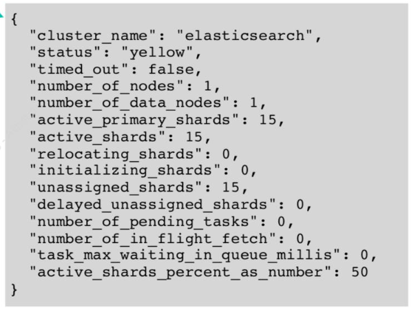
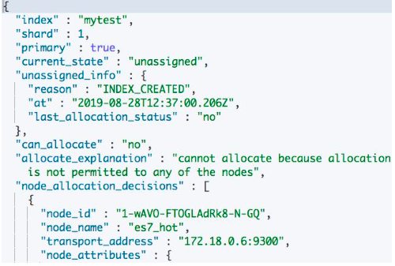

第四节 解决集群 Yellow 与 Red 的问题
1、集群健康度
分片健康
- 红:至少有一个主分片没有分配
- 黄:至少有一个副本没有分配
- 绿:主副本分片全部正常分配
索引健康: 最差的分片的状态
集群健康: 最差的索引的状态

2、Health 相关的 API

GET _cluster/health: 集群的状态(检查节点数量)GET _cluster/health?level=indices: 所有索引的健康状态 (查看有问题的索引)GET _cluster/health/my_index: 单个索引的健康状态(查看具体的索引)GET _cluster/health?level=shards: 分片级的索引GET _cluster/allocation/explain: 返回第一个未分配 Shard 的原因
3-1 案例 1
- 症状:集群变红
- 分析:通过 Allocation Explain API 发现创建索引失败，因为无法找到标记了相应 box type 的节点
- 解决:
- 删除索引，集群变绿。
- 重新创建索引，并且指定正确的 routing box type，索引创建成功。
- 集群保持绿色状态
3-2 案例 2
- 症状:集群变黄
- 分析:通过 Allocation Explain API 发现无法在相同的节点上创建副本
- 解决:将索引的副本数设置为 0，或者通过增加节点解决
3、分片没有被分配的一些原因
INDEX_CREATE: 创建索引导致。在索引的全部分片分配完成之前，会有短暂的 Red，不一定代表有问题INDEX_REOPEN:Open 一个之前 Close 的索引CLUSTER_RECOVER:集群重启阶段，会有这个问题DANGLING_INDEX_IMPORTED:一个节点离开集群期间，有索引被删除。这个节点重新返回时，会 导致 Dangling 的问题:- 解决问题： 删除掉索引
https://www.elastic.co/guide/en/elasticsearch/reference/7.1/cat-shards.html
4、常见问题与解决方法常见问题与解决方法
- 集群变红，需要检查是否有节点离线。如果有，通常通过重启离线的节点可以解决问题
- 由于配置导致的问题，需要修复相关的配置(例如错误的
box_type，错误的副本数)- 如果是测试的索引，可以直接删除
- 因为磁盘空间限制，分片规则(Shard Filtering)引发的，需要调整规则或者增加节点
- 对于节点返回集群，导致的 dangling 变红，可直接删除 dangling 索引
dangling出现的情况是，用户删除一个索引a，删除的时候恰好nodeA 关机了，或者因为一些原因，离开了集群。这个时候索引a被删除了。然后NodeA又回来了，NodeA里面带有索引a的分片，这样的场景下会导致集群变红。而索引a本来就是用户希望delete的，只是没delete干净，所以不存在你说的丢数据的情况。
5、集群 Red & Yellow 问题的总结
- Red & Yellow 是集群运维中常见的问题
- 除了集群故障，一些创建，增加副本等操作， 都会导致集群短暂的 Red 和 Yellow，所以 监控和报警时需要设置一定的延时
- 通过检查节点数，使用 ES 提供的相关 API， 找到真正的原因
- 可以指定 Move 或者 Reallocate 分片

6、操作实验
6-1 启动hot-warm-cold集群
docker-compose.yaml
version: '2.2'
services:
cerebro:
image: lmenezes/cerebro:0.8.3
container_name: hwc_cerebro
ports:
- "9000:9000"
command:
- -Dhosts.0.host=http://elasticsearch:9200
networks:
- hw_hwc_es7net
kibana:
image: docker.elastic.co/kibana/kibana:7.9.1
container_name: hwc_kibana7
environment:
#- I18N_LOCALE=zh-CN
- XPACK_GRAPH_ENABLED=true
- TIMELION_ENABLED=true
- XPACK_MONITORING_COLLECTION_ENABLED="true"
ports:
- "5601:5601"
networks:
- hw_hwc_es7net
elasticsearch:
image: docker.elastic.co/elasticsearch/elasticsearch:7.9.1
container_name: es7_hot
environment:
- cluster.name=es-hwc
- node.name=es7_hot
- node.attr.box_type=hot
- bootstrap.memory_lock=true
- "ES_JAVA_OPTS=-Xms512m -Xmx512m"
- discovery.seed_hosts=es7_hot,es7_warm,es7_cold
- cluster.initial_master_nodes=es7_hot,es7_warm,es7_cold
ulimits:
memlock:
soft: -1
hard: -1
volumes:
- hwc_es7data_hot:/usr/share/elasticsearch/data
ports:
- 9200:9200
networks:
- hw_hwc_es7net
elasticsearch2:
image: docker.elastic.co/elasticsearch/elasticsearch:7.9.1
container_name: es7_warm
environment:
- cluster.name=es-hwc
- node.name=es7_warm
- node.attr.box_type=warm
- bootstrap.memory_lock=true
- "ES_JAVA_OPTS=-Xms512m -Xmx512m"
- discovery.seed_hosts=es7_hot,es7_warm,es7_cold
- cluster.initial_master_nodes=es7_hot,es7_warm,es7_cold
ulimits:
memlock:
soft: -1
hard: -1
volumes:
- hwc_es7data_warm:/usr/share/elasticsearch/data
networks:
- hw_hwc_es7net
elasticsearch3:
image: docker.elastic.co/elasticsearch/elasticsearch:7.9.1
container_name: es7_cold
environment:
- cluster.name=es-hwc
- node.name=es7_cold
- node.attr.box_type=cold
- bootstrap.memory_lock=true
- "ES_JAVA_OPTS=-Xms512m -Xmx512m"
- discovery.seed_hosts=es7_hot,es7_warm,es7_cold
- cluster.initial_master_nodes=es7_hot,es7_warm,es7_cold
ulimits:
memlock:
soft: -1
hard: -1
volumes:
- hwc_es7data_cold:/usr/share/elasticsearch/data
networks:
- hw_hwc_es7net
volumes:
hwc_es7data_hot:
driver: local
hwc_es7data_warm:
driver: local
hwc_es7data_cold:
driver: local
networks:
# hwc_es7net:
hw_hwc_es7net:
driver: bridge
docker-compose up -d
http://192.168.33.12:9200/_cat/nodes?v
ip heap.percent ram.percent cpu load_1m load_5m load_15m node.role master name
172.19.0.6 27 95 54 1.88 3.85 2.20 dilmrt - es7_hot
172.19.0.2 46 95 54 1.88 3.85 2.20 dilmrt - es7_cold
172.19.0.4 45 95 54 1.88 3.85 2.20 dilmrt * es7_warm
http://192.168.33.12:9200/_cat/shards?v
index shard prirep state docs store ip node
.kibana_task_manager_1 0 p STARTED 6 102.6kb 172.19.0.2 es7_cold
.kibana_task_manager_1 0 r STARTED 6 83.5kb 172.19.0.4 es7_warm
ilm-history-2-000001 0 p STARTED 172.19.0.6 es7_hot
ilm-history-2-000001 0 r STARTED 172.19.0.4 es7_warm
.kibana-event-log-7.9.1-000001 0 r STARTED 1 5.4kb 172.19.0.2 es7_cold
.kibana-event-log-7.9.1-000001 0 p STARTED 1 5.4kb 172.19.0.6 es7_hot
.kibana_1 0 r STARTED 8 10.4mb 172.19.0.2 es7_cold
.kibana_1 0 p STARTED 8 10.4mb 172.19.0.6 es7_hot
.apm-agent-configuration 0 p STARTED 0 208b 172.19.0.6 es7_hot
.apm-agent-configuration 0 r STARTED 0 208b 172.19.0.4 es7_warm
.apm-custom-link 0 r STARTED 0 208b 172.19.0.2 es7_cold
.apm-custom-link 0 p STARTED 0 208b 172.19.0.4 es7_warm
6-2 案例 1 症状:集群变红
#案例1
DELETE mytest
PUT mytest
{
"settings":{
"number_of_shards":3,
"number_of_replicas":0,
"index.routing.allocation.require.box_type":"hott"
}
}
"index.routing.allocation.require.box_type":"hott"
# 检查集群状态，查看是否有节点丢失，有多少分片无法分配
GET /_cluster/health/
Output:
{
"cluster_name" : "es-hwc",
"status" : "red",
"timed_out" : false,
"number_of_nodes" : 3,
"number_of_data_nodes" : 3,
"active_primary_shards" : 6,
"active_shards" : 12,
"relocating_shards" : 0,
"initializing_shards" : 0,
"unassigned_shards" : 3,
"delayed_unassigned_shards" : 0,
"number_of_pending_tasks" : 0,
"number_of_in_flight_fetch" : 0,
"task_max_waiting_in_queue_millis" : 0,
"active_shards_percent_as_number" : 80.0
}
查看索引级别,找到红色的索引
# 查看索引级别,找到红色的索引
GET /_cluster/health?level=indices
{
"cluster_name" : "es-hwc",
"status" : "red",
"timed_out" : false,
"number_of_nodes" : 3,
"number_of_data_nodes" : 3,
"active_primary_shards" : 6,
"active_shards" : 12,
"relocating_shards" : 0,
"initializing_shards" : 0,
"unassigned_shards" : 3,
"delayed_unassigned_shards" : 0,
"number_of_pending_tasks" : 0,
"number_of_in_flight_fetch" : 0,
"task_max_waiting_in_queue_millis" : 0,
"active_shards_percent_as_number" : 80.0,
"indices" : {
"mytest" : {
"status" : "red",
"number_of_shards" : 3,
"number_of_replicas" : 0,
"active_primary_shards" : 0,
"active_shards" : 0,
"relocating_shards" : 0,
"initializing_shards" : 0,
"unassigned_shards" : 3
},
...
查看索引的分片
#查看索引的分片
GET _cluster/health?level=shards
...
"indices" : {
"mytest" : {
"status" : "red",
"number_of_shards" : 3,
"number_of_replicas" : 0,
"active_primary_shards" : 0,
"active_shards" : 0,
"relocating_shards" : 0,
"initializing_shards" : 0,
"unassigned_shards" : 3,
"shards" : {
"0" : {
"status" : "red",
"primary_active" : false,
"active_shards" : 0,
"relocating_shards" : 0,
"initializing_shards" : 0,
"unassigned_shards" : 1
},
"1" : {
"status" : "red",
"primary_active" : false,
"active_shards" : 0,
"relocating_shards" : 0,
"initializing_shards" : 0,
"unassigned_shards" : 1
},
"2" : {
"status" : "red",
"primary_active" : false,
"active_shards" : 0,
"relocating_shards" : 0,
"initializing_shards" : 0,
"unassigned_shards" : 1
}
}
},
...
Explain 变红的原因
# Explain 变红的原因
GET /_cluster/allocation/explain
Output
"node_allocation_decisions" : [
{
"node_id" : "XqZ-rFd8RiuZU2h-u8_s2Q",
"node_name" : "es7_cold",
"transport_address" : "172.19.0.2:9300",
"node_attributes" : {
"ml.machine_memory" : "3973804032",
"ml.max_open_jobs" : "20",
"box_type" : "cold",
"xpack.installed" : "true",
"transform.node" : "true"
},
"node_decision" : "no",
"weight_ranking" : 1,
"deciders" : [
{
"decider" : "filter",
"decision" : "NO",
"explanation" : """node does not match index setting [index.routing.allocation.require] filters [box_type:"hott"]"""
}
]
},
...
```
```
GET /_cat/shards/mytest
Output:
mytest 1 p UNASSIGNED
mytest 2 p UNASSIGNED
mytest 0 p UNASSIGNED
GET _cat/nodeattrs
Output:
es7_hot 172.19.0.6 172.19.0.6 ml.machine_memory 3973804032
es7_hot 172.19.0.6 172.19.0.6 ml.max_open_jobs 20
es7_hot 172.19.0.6 172.19.0.6 box_type hot
es7_hot 172.19.0.6 172.19.0.6 xpack.installed true
es7_hot 172.19.0.6 172.19.0.6 transform.node true
es7_cold 172.19.0.2 172.19.0.2 ml.machine_memory 3973804032
es7_cold 172.19.0.2 172.19.0.2 ml.max_open_jobs 20
es7_cold 172.19.0.2 172.19.0.2 box_type cold
es7_cold 172.19.0.2 172.19.0.2 xpack.installed true
es7_cold 172.19.0.2 172.19.0.2 transform.node true
es7_warm 172.19.0.4 172.19.0.4 ml.machine_memory 3973804032
es7_warm 172.19.0.4 172.19.0.4 ml.max_open_jobs 20
es7_warm 172.19.0.4 172.19.0.4 box_type warm
es7_warm 172.19.0.4 172.19.0.4 xpack.installed true
es7_warm 172.19.0.4 172.19.0.4 transform.node true
DELETE mytest
GET /_cluster/health/
Output:
{
"cluster_name" : "es-hwc",
"status" : "green",
"timed_out" : false,
"number_of_nodes" : 3,
"number_of_data_nodes" : 3,
"active_primary_shards" : 6,
"active_shards" : 12,
"relocating_shards" : 0,
"initializing_shards" : 0,
"unassigned_shards" : 0,
"delayed_unassigned_shards" : 0,
"number_of_pending_tasks" : 0,
"number_of_in_flight_fetch" : 0,
"task_max_waiting_in_queue_millis" : 0,
"active_shards_percent_as_number" : 100.0
}
PUT mytest
{
"settings":{
"number_of_shards":3,
"number_of_replicas":0,
"index.routing.allocation.require.box_type":"hot"
}
}
GET /_cluster/health/
{
"cluster_name" : "es-hwc",
"status" : "green",
...
6-3 案例2, Explain 看 hot 上的 explain
DELETE mytest
PUT mytest
{
"settings":{
"number_of_shards":2,
"number_of_replicas":1,
"index.routing.allocation.require.box_type":"hot"
}
}
GET _cluster/health
{
"cluster_name" : "es-hwc",
"status" : "yellow",
"timed_out" : false,
GET _cat/shards/mytest
mytest 1 p STARTED 0 208b 172.19.0.6 es7_hot
mytest 1 r UNASSIGNED
mytest 0 p STARTED 0 208b 172.19.0.6 es7_hot
mytest 0 r UNASSIGNED
GET /_cluster/allocation/explain
...
"node_allocation_decisions" : [
{
"node_id" : "XqZ-rFd8RiuZU2h-u8_s2Q",
"node_name" : "es7_cold",
"transport_address" : "172.19.0.2:9300",
"node_attributes" : {
"ml.machine_memory" : "3973804032",
"ml.max_open_jobs" : "20",
"box_type" : "cold",
"xpack.installed" : "true",
"transform.node" : "true"
},
"node_decision" : "no",
"weight_ranking" : 1,
"deciders" : [
{
"decider" : "filter",
"decision" : "NO",
"explanation" : """node does not match index setting [index.routing.allocation.require] filters [box_type:"hot"]"""
}
]
},
...